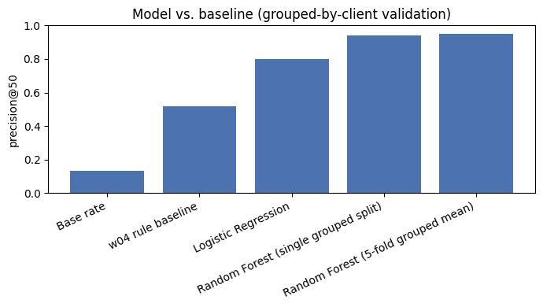

Content teams need to know which pages to review first, but a simple "declining traffic" rule flags too many pages to act on. This study asks whether a learned ranking can do better than a transparent, hand-written rule at prioritizing 331,437 content pages from FlyRank's production search-performance warehouse. Using March 2026 search and engagement signals to predict an April click decline, a Random Forest ranking model reached a mean precision@50 of 0.944 (5-fold, grouped by client) versus 0.520 for the rule-based baseline and a 0.134 base rate. The result is directional and decision-support, not causal: it identifies which pages are worth a human's attention first, not which pages a refresh will fix. The output is delivered as a ranked action queue with reason codes, human-review requirements, and an explicit no-go list for what should never be automated.
A content or SEO reviewer with limited weekly capacity cannot manually re-check every page in a portfolio. The decision this work supports is narrow and concrete: given a page's recent performance, should a reviewer look at it this week, and if so, what should they consider doing — refresh it, support it, or simply monitor it. Getting this wrong has an asymmetric cost. Missing a real decline on a high-demand page means lost visibility that compounds the longer it goes unaddressed; flagging a healthy page for review costs a few minutes of a reviewer's time. That asymmetry is why this study optimizes for precision@K — of the top pages the ranking surfaces, how many actually deserve review — rather than plain classification accuracy.
This study uses the FlyRank ML Internship warehouse release, specifically the
fact_content_daily_performance table (page-day grain), accessed via a gated
Hugging Face dataset and queried directly with DuckDB — no data was downloaded in bulk.
| Property | Value |
|---|---|
| Feature window | March 2026 (month=2026-03) |
| Label window | April 2026 (month=2026-04) — strictly after the feature window |
| Rows analyzed (one row = one page's March aggregate) | 331,437 |
| Rows with no search visibility in March (excluded from the action queue) | 154,699 (46.7%) |
Deliberately excluded, and why:
fact_content_daily_performance_sample — this table is exactly June 2026,
the dataset's natural sealed test month for any past→future label. Using it to iterate on
label logic would silently defeat its purpose as a held-out check.Label. declined_in_april = April clicks < March clicks,
for the same page. This is a proxy for "this page lost ground," not a confirmed causal
outcome — and it is built strictly from a later time window than every feature, so no
feature can see the answer in advance.
Features (9, all March-only). Impression-weighted average position, impressions, clicks, click-through rate, GA4 sessions, engaged sessions, scroll events, AI-referral sessions, and a GA4-data-availability flag.
Baseline. A transparent, hand-written rule: for each page, compare actual clicks to the expected clicks a typical page at the same search-position tier gets (a tier baseline fit only on the training split), flagging pages losing more clicks than their tier peers, restricted to pages with real search demand.
Model. Logistic Regression first (a readable, coefficient-per-feature baseline model), then Random Forest (300 trees, depth 8) — chosen because this is a ranking question ("which pages first?"), evaluated at precision@50 rather than accuracy, and because a manual review of the rule baseline's own top-ranked pages showed several signals interacting in ways a single linear rule could not capture. Gradient Boosting was deliberately not used this round, since the simpler comparison had not yet been shown to need the extra complexity.
Validation design. Every split in this study is grouped by client, never a plain random row split. Pages from the same client share systematic factors — industry, historical SEO investment, overall site quality — that a random split would let leak between training and test data, letting a model partly memorize a client's pattern instead of learning something that generalizes to a client it has never seen.
Leakage checks. Earlier in this project, a column drawn from the same window as the label was deliberately added as a feature to see what would happen: the model's AUC jumped to a suspicious 1.000, up from an honest 0.944 without it. Removing that column restored the honest score — a concrete, reproduced demonstration of why label-window leakage is dangerous, not just a rule to follow on faith. The final feature set was checked programmatically for label-derived or sibling columns, feature/label window overlap, and any product-decision flags used as inputs; none were found.
All numbers below are computed on the same held-out test rows, the same label, and the same metric (precision@50) as the baseline — including recomputing the baseline's own tier comparison using only the training split, so it gets exactly the same "don't peek at test data" treatment as the models.
| Method | Precision@50 |
|---|---|
| Base rate (random ranking) | 0.134 |
| Rule-based baseline (transparent, hand-written) | 0.520 |
| Logistic Regression | 0.800 |
| Random Forest (single grouped split) | 0.940 |
| Random Forest (5-fold grouped mean) | 0.944 (std 0.053, range 0.86–1.00) |

What the model leans on. Permutation importance ranks CTR, clicks, and impressions as the top three features — all plausible drivers of a click-based decline label, and none suspiciously dominant in a way that would suggest leakage.
Where the model is wrong. Manual review of the model's false positives found a consistent pattern: very low-volume pages, where a single click's difference swings the click-through ratio dramatically, are the most common source of misranked pages — the model is most confident, and most wrong, on pages with the thinnest evidence behind them.
The final model scores every page with an out-of-fold prediction (no page is ever scored by a model that was trained on it), then assigns a reason code and a suggested action from a small, interpretable rule set — not the raw score alone, since a bare number does not tell a reviewer why a page was flagged.
| Reason code | Condition | Suggested action |
|---|---|---|
page_one_at_risk | Position 1–10, real demand, high model score | Protect and refresh |
striking_distance_opportunity | Position 11–20, real demand, high model score | Support striking distance |
visible_but_declining | Position 21–50, real demand, high model score | Review for refresh |
low_demand_flagged | Weak demand, high model score | Monitor only |
no_search_visibility | No position data | Not applicable — excluded |
Human review requirements before acting on any flagged page:
Every notebook referenced in this paper lives in the public repo below, with fixed random
seeds (random_state=42 throughout — the splits, the Random Forest, and the
cross-validation) so re-running should reproduce the same tables.
Built on the FlyRank ML Internship dataset — flyrank.ai.